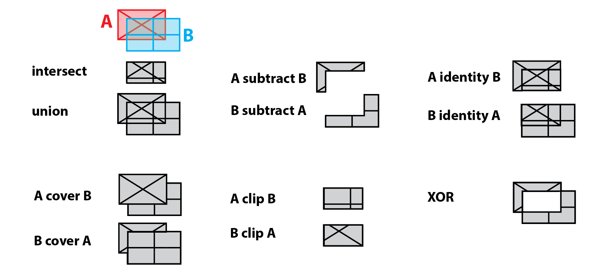

Preamble
Spatial analysis and more narrowly geoprocessing is a core component, capacity and function of GIS. Here the goal is to identify, manipulate, transform and operate both within and amongst spatial layers in order to solve spatial problems. Early in the assignment you will operate within single layers - known simply as single layer analysis. Here you will want to create proximity distances from a geographic feature that is deemed toxic, a danger to avoid via distance. Later in the assignment you will utilize overlay analysis between two layers of spatial data. Overlay analysis is operation(s) in GIS for superimposing multiple spatial layers representing different themes together for analyzing or identifying relationships between each of the layers. As discussed in the lecture, Boolean logic will be utilized throughout these analysis steps. In the overlay analysis steps, new spatial data sets will be created; in some instances, these new data sets will become the input for yet another step in the larger assignment methodology.
This week’s assignment will draw on the primary concepts covered in Class 7 lecture & lab sessions:
- Geoprocessing - Proximity and Overlay
- Calculating Geometry
- Assigning Field Values and ranks
- Joining Tabular data to Feature Data
- Thematic Map Design for Hazard Ranking
In this seventh assignment, you will utilize the Class 7 Technical Lab as a guide to complete your seventh mapping project utilizing input data representing ERW toxicity - “explosive remnants of war” left over from the late 1990’s Kosovo War. As discussed in the lecture, this is a global problem despite international law outlawing both land mines and cluster bombs - primary sources of war contamination.
A synopsis of the technical steps of the assignment listed as follows:
- Download and access necessary data for both administrative and ERW themes for Kosovo. These features will all be vector features in the same coordinate system for Kosovo - a local projected system known
ETRS 1989 Kosovo Gridwith units inmeters. - Create Proximity Buffers for both Land Mines and Cluster Bombs - both with different zone distances.
- Union and Dissolve these distances into one final layer of contamination.
- Clip the newly created contamination zone to meaningful administration boundaries known as districts; once complete each district now has a portion of contamination that ‘starts and stops’ at the polygon edge of each district.
- Once clipped, each district will have a certain area calculation of contamination; and some districts will have no contamination reported back as
NULL. - With area and % of districts calculations complete in a districts table, this tabular structure will be ranked and then joined back to the original feature geometry for districts.
- With a completed feature for districts, an ordinal value will then be mapped to give priority to districts within Kosovo for cleanup intervention.
As discussed in the lecture, the following flowchart denotes significant stages of the assignment methodology:

Data
Location of Class 7 KosovaERW.gdb for download
To begin the assignment, download and access the following .gdb. Create a new assignment .mxd and connect ArcCatalog to the .gdb:
.gdb structureNote the local, projected coordinate system and its unit of measurement that will be used throughout the assignment. It is critical that all features used is a geoprocessing framework partake of the same coordinate system to avoid any processing errors.
Class 7 Readings:
This week’s reading that will be featured on the upcoming quiz will be from Essentials of Geographic Information Systems textbook.
The Class 7 quiz on Monday 03/27/23 will feature 10 questions covering content in the textbook Chapter 8 (read the complete chapter) as noted below:
Essentials of Geographic Information Systems textbook - Chapter 8, pages 147 - 158 (Spatial Analysis of Vector Data)
Supplemental reading (not featured on Quiz):
- International Committee of the Red Cross - Explosive Remnants of War
- For further discussion and terminology related to Toxic Remnants of War, see website.
Assignment Step 1
Create an Unique, Global ID, aka GUID field. This results in a unique ID per district polygon feature which will be used later in the assignment to uniquely identify all the Kosovo districts.
Assignment Step 2
Create BUFFERS:
UXOLandmineSites Buffer = 100 meters
ClusterBombs Buffer = 500 meters
Save all resulting buffer features in the assignment folder outside the .gdb. Create and Name a folder exports in which you save your geoprocessing results throughout the assignment.
Assignment Step 3
Enact UNION:
UNION ClusterBombSites Buffer + UXOLandmineSites Buffer
Assignment Step 4
Enact DISSOLVE:
The UNION can be fully dissolved into one polygon feature through several avenues within ArcGIS. One foolproof approach is to make a new field entitled dissolve_C (dissolve calculation) and populate it with the field calculator with a simple number, in this case 1.
Assignment Step 5
Enact Clipping:
At this juncture, the ERW area has been determined and dissolved into one feature, but there is no way to determine where ERW starts and stops within a particular district(s). To accomplish this task Clip will be utilized with districts as the clipping feature, and dissolved ERW buffer area as the feature to be clipped.
Assignment Step 6
Add GEOMETRY
Within the clipped result, calculate geometry for the area within the districts that is contaminated.
Assignment Step 7
Derive % of contamination per district:
As a result of Step #6 above, both AREA for districts as well as AREA for contaminated sq. area (meters) now exists in the attribute table for contaminated_districts - the result of the Clip geoprocessing. The following steps will create a normalized column for % of each district that is contaminated. This is needed to know the relative levels of contamination across all districts in Kosovo.
Use the following expression for % contaminated:
"AREA of contamination" / "AREA of district" * 100
Use Add field to create a new column that will house % contaminated. Name the field/column PCT_CNTM
Assignment Step 8
Determine categorical classification ‘level of contamination’:
While normalized % contamination now exists in the table, an ordinal category of ‘level of contamination’ is a more effective approach for priority mapping. In this step both thresholds and a range will be used to develop levels based on the following criteria:
| Level Description | Definition |
|---|---|
| None | 0 percent, i.e. NULL |
| Low | <1.3 percent (up to the median value of contamination) |
| Medium | 1.3-6.5 (between one and five times the median value of contamination) |
| High | >6.5 percent (more than five times the median value of contamination) |
To start, create a column entitled LVL_CONTM via Add field, text type with an length of 50 (default). This will be the column for Level Descriptions.
Assignment Step 9
Select and assign ordinal levels to active SQL selections within the column PCT_CNTM, applying the 4 threshold conditions to the LVL_CONTM column, minus the “NONE” value which you will do at the end of the assignment.
Assignment Step 10
TABLE JOIN as follows:
Join the contamination ranks table to original district feature in preparation for final thematic mapping. Utilize the Table Join function to do this step. The Global ID will be used as the join column.
Assignment Step 11
Thematically map ‘Level of ERW Contamination’:
Utilize the LVL_CONTM column as input into ordinal categories for thematic mapping. Design your classes so that those districts with high contamination appear dense relative to medium and low classes. Make sure to visually segment the districts that have no contamination (NULL) separate from the classes that do indeed have some level of contamination as its especially important to separate none from low.
- Refer to Map Layout & Deliverable below for other cartographic details.
Map layout & Deliverable:
To development the final map design, utilize the map example PDF below to help guide your process.
Final map layout will include the following elements on either a 11x17” or 8.5x11” Portrait 300 DPI:
- Main map frame featuring your cartographic output with thematic design
- A map title
- Legend representing each ordinal value for level of contamination
- Data source & Author tag

Example Layout - Assignment 7 Utilize the following map examples to guide your design process:
Resources:
Mine Action Clearance, Kosovo - 2022